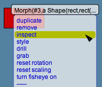
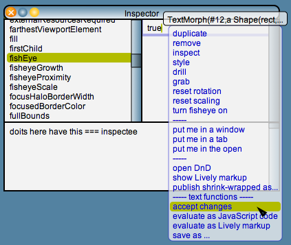

Lively Kernel Tutorial: (14) Object Inspector
Back to Introduction
PREVIOUS
Source code of this demo
NEXT
You can open an inspector for every object in the system by choosing
the "inspect" operation from the popup menu of the object.


Try it yourself! Try opening an inspector for the rectangle object
that is shown in the display. View the various attributes of the rectangle
object using the inspector.